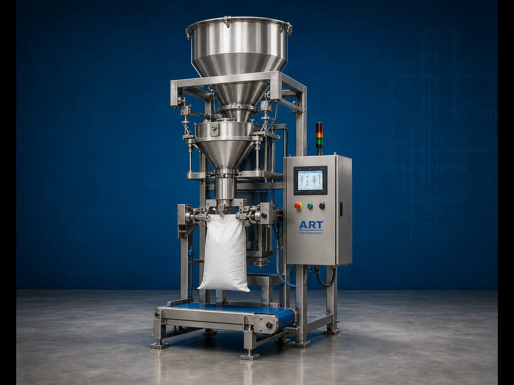

Weighing & Dosing Machine for Sacks & Bags (Automatic Bag Weighing & Filling System)
A Weighing & Dosing Machine for Sacks & Bags, also known as a Bag Weighing Machine, Sack Dosing Machine, Automatic Weigh Filler, or Bulk Bag Weighing & Filling System, is an advanced industrial packaging solution designed for automatic weighing, dosing, filling, bag positioning, sack clamping,…

About the Weighing & Dosing
Weighing and dosing systems for sacks and bags are widely used for: ✔ Grain bag weighing and filling ✔ Flour sack dosing operations ✔ Cement bag weighing ✔ Chemical powder dosing ✔ Fertilizer sack filling ✔ Feed bag weighing systems ✔ Mineral powder bagging ✔ Bulk material packaging operations
The machine improves: ✔ Weighing accuracy ✔ Filling consistency ✔ Packaging speed ✔ Material handling efficiency ✔ Labor productivity ✔ Product loss control ✔ Dispatch efficiency
Industrial weighing & dosing machines use: ✔ Precision load cell weighing systems ✔ Servo synchronized dosing systems ✔ PLC and HMI automation controls ✔ Screw, gravity, or belt feeding mechanisms ✔ Automatic bag clamping systems
to automatically weigh and fill sacks and bags with superior accuracy and high production efficiency.
Weighing & dosing machines for sacks and bags are widely used in industries such as:
Food processing industries Rice industries Flour industries Chemical industries Fertilizer industries Animal feed industries Mineral industries Construction material industries
where accurate weighing and high-speed bulk packaging operations are essential.
The machine is highly suitable for: ✔ Grain sack weighing ✔ Flour bag dosing ✔ Cement bag filling ✔ Chemical powder weighing ✔ Fertilizer packaging ✔ Feed bagging systems ✔ Mineral powder packaging
ART Mechatronics offers high-performance weighing & dosing machines for sacks and bags, engineered for continuous industrial operation, precision weighing performance, durable construction, and reliable long-term packaging automation.
Working Principle of Weighing & Dosing Machine for Sacks & Bags
- 1. Empty Sack / Bag Positioning Empty sacks or bags are manually or automatically positioned into bag clamping section.
- 2. Product Weighing Process Machine automatically weighs product using precision load cell and servo synchronized dosing systems.
Advanced automation ensures accurate target weight and smooth material flow.
- 3. Material Dosing & Filling Operation Machine handles: ✔ Flour ✔ Grains ✔ Cement ✔ Fertilizers ✔ Minerals ✔ Chemicals ✔ Animal feed
accurately and continuously.
- 4. Bag Closing & Sealing Integration Machine can integrate with: Bag stitching systems Heat sealing systems Valve sealing systems Automatic bag conveyors
for secure transportation and storage packaging quality.
- 5. Conveyor & Dispatch Integration Filled bags transferred automatically through: Conveyors Check weighers Bag flatteners Metal detectors Palletizing systems
- 6. Finished Bag Discharge Finished sacks and bags discharged automatically for: Warehouse storage Truck loading Dispatch operations Export shipment handling
Types of Weighing & Dosing Machines for Sacks & Bags
- 1. Gross Weigh Bag Filling Machine Designed for: ✔ Bulk bag weighing and filling applications
- 2. Net Weigh Bag Filling Machine Suitable for: ✔ High-accuracy industrial packaging systems
- 3. Screw Feeding Dosing Machine Uses: ✔ Powder and fine material dosing systems
- 4. Gravity Feeding Bag Filling Machine Designed for: ✔ Free-flowing granule and grain packaging systems
- 5. Servo Driven Weighing & Dosing Machine Suitable for: ✔ Precision high-speed weighing and filling operations
- 6. Fully Automatic Weighing & Dosing System Designed for: ✔ Complete industrial bulk packaging automation lines
Industries Using Weighing & Dosing Machines
🌾 Grain & Flour Industry Rice, wheat, flour, pulses, and cereal weighing and bag filling systems. ⚗️ Chemical Industry Chemical powder, granules, pigments, and industrial material dosing systems. 🏗️ Cement & Construction Industry Cement, mortar, gypsum, fly ash, and construction material bag weighing systems. 🌱 Fertilizer Industry Fertilizer granule and agricultural product bag filling systems. 🐄 Animal Feed Industry Cattle feed, poultry feed, fish feed, and animal nutrition weighing systems. ⛏️ Mineral Industry Mineral powder, silica, calcium carbonate, and mining material weighing systems.
Features & Advantages
✔ High-speed automatic weighing and dosing operation ✔ Accurate load cell weighing systems ✔ Precision material dosing and filling control ✔ PLC and servo automation control systems ✔ Improves dispatch and warehouse efficiency ✔ Reduces labor dependency and product wastage ✔ Supports multiple sack and bag sizes ✔ Reliable long-term industrial performance ✔ Smooth and continuous bulk packaging operation
Technical Highlights
Machine Type: Automatic bag weighing machine Industrial dosing machine Bulk material weigh filler system Packaging Material: PP woven sacks Paper bags Valve bags FIBC jumbo bags Dosing Integration: Load cell weighing systems Screw feeders Gravity feeders Belt feeding systems Features: PLC control system Servo synchronization Touchscreen HMI Automatic bag clamping Conveyor integration Applications: Powders Granules Grains Minerals Chemicals Animal feed Automation: Semi-automatic Fully automatic industrial systems
Turnkey Weighing & Dosing Solutions
ART Mechatronics offers: Complete weighing and dosing systems Automatic bulk bagging solutions Packaging automation integration systems Conveyor synchronization systems Installation & commissioning After-sales service & AMC
Why Choose Art Mechatronics
Expertise in industrial packaging and automation systems Customized weighing and dosing solutions for multiple industries High-performance and durable weighing technology Advanced PLC and servo automation systems Proven industrial packaging performance across sectors
Applications
Flour Mills Rice Processing Plants Cement Manufacturing Plants Chemical Industries Fertilizer Manufacturing Units Animal Feed Industries
Industries that use the Weighing & Dosing
Get pricing & specs for the Weighing & Dosing
Share the product, target capacity, current process and plant location. These details help our engineers discuss the right machine or line configuration.
One partner, from design to start-up
ART Mechatronics designs, manufactures, installs and commissions your Weighing & Dosing solution with regional presence in India, UAE and Thailand.